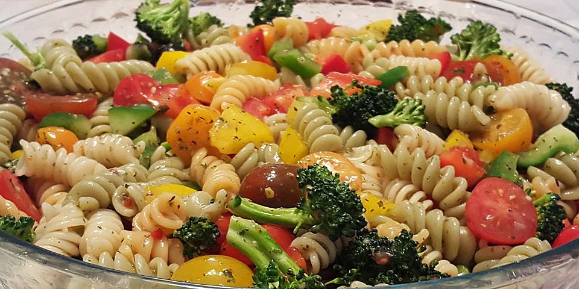

Pasta Salad/h1>

“Fresh and easy pasta salad packed with crisp vegetables, fresh
mozzarella, and tossed with a simple homemade dressing. The perfect side
dish!”
Ingredients
- 1 pound tri-colored spiral pasta
- 6 tablespoons salad seasoning mix
- 1 (16 ounce) bottle Italian-style salad dressing
- 2 cups cherry tomatoes, diced
- 1 green bell pepper, chopped
- 1 red bell pepper, diced
- ½ yellow bell pepper, chopped
- 1 (2.25 ounce) can black olives, chopped
Directions
-
In a large pot of salted boiling water, cook pasta until al dente, rinse
under cold water and drain.
- Whisk together the salad spice mix and Italian dressing.
-
In a salad bowl, combine the pasta, cherry tomatoes, bell peppers and
olives. Pour dressing over salad; toss and refrigerate overnight.
source:
allrecipes